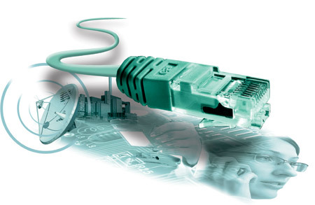
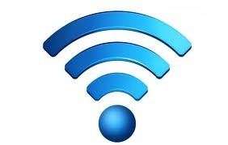
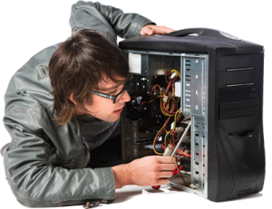

Modernização do Ambiente de trabalho.
Vamos trabalhar com um planejamento
objetivo e estabelecer cronogramas para realização de inspeções e
manutenções preventivas para ajudar a sua empresa a atingir o alto
padrão tecnológico.
Iremos implementar soluções para maximizar um maior conforto
tecnológico em seu negócio.

Criação de Redes Compartilhadas.
Contamos com uma equipe técnica altamente
qualificada a executar os mais diversos serviços relacionados à instalação de redes.
Implementação de Tecnologia Wireless

Uma WLAN é uma rede sem fio que ao invés de utilizar cabos para conectar
desktops e notebooks à rede, usa-se roteadores sem fio, onde vários tipos de
dispositivos móveis se conectam e adquirem acesso à rede.
Os usuários desses
dispositivos podem mudar de cômodos, passar por corredores e até mesmo mudar
de andar. Eles permanecerão conectados à rede e a Internet desde que seja
na área coberta pelo sinal wireless.

Manutenção de Desktop, Notebook e Wireless.
Nossos serviços de manutenção de computadores são
realizados por especialistas no diagnostico e conserto de qualquer marca
ou modelo de dispositivo.
Instalação, Configuração e Suporte de Programas
Realizamos uma análise da instalação e
configuração do sistema operacional e dos equipamentos,
e ainda instalamos todos os programas necessários para um
melhor desempenho do seu computador proporcionando um
sistema mais eficiente.
Montagem de Computadores.
Montamos computadores sob encomenda,
onde orientamos o cliente resultando em uma máquina excusiva para
seu tipo de necessidade, seja ela profissional, gamer ou casual.
Criação, Otimização e Manutenção de Sites.
Desenvolvemos sites diferenciados com o objetivo
de proporcionar uma comunicação eficaz, criativa e que gere resultados.
Com a otimização, você moderniza seu site e se destaca da concorrência
aumentando o número de visitas acessos recebidos.
Possuímos também o
serviço de e-mail profissional e hospedagem em servidores de última
geração e de primeira linha.
Digitação e processamento de dados
Fornecemos serviço de digitação que
consiste em transferir os dados que se encontram em documentos,
fichas catalográficas, entre outros, para informações digitais,
proporcionando maior segurança e flexibilidade. projetos de seus
clientes.
Instalação e aperfeiçoamento de sistemas de câmeras de segurança.
Instalamos sistemas de monitoramento, gravação e
transmissão de imagens com câmeras de alta definição.
Atendemos às ecessidades de prevenção e segurança em sua
residência ou empresa.